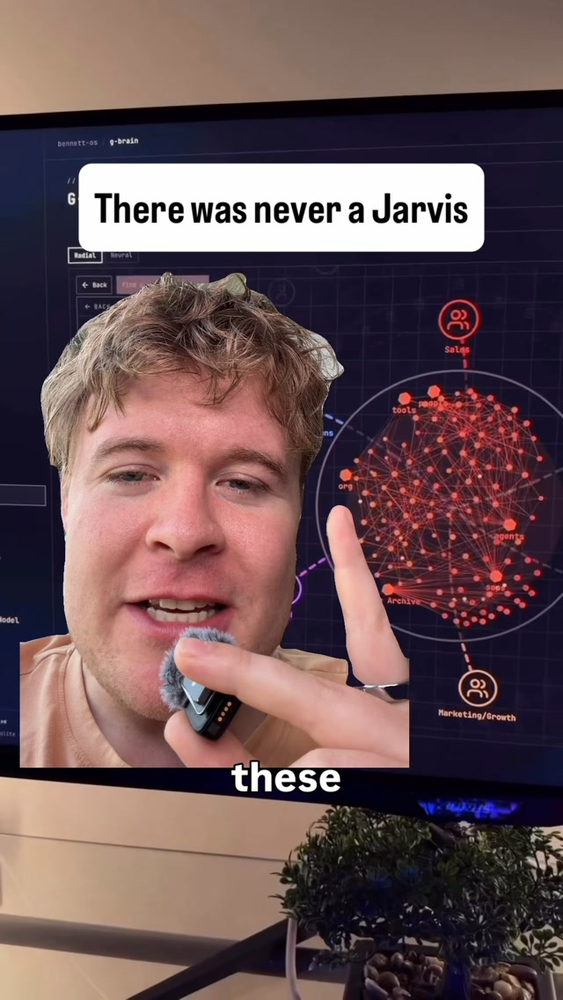
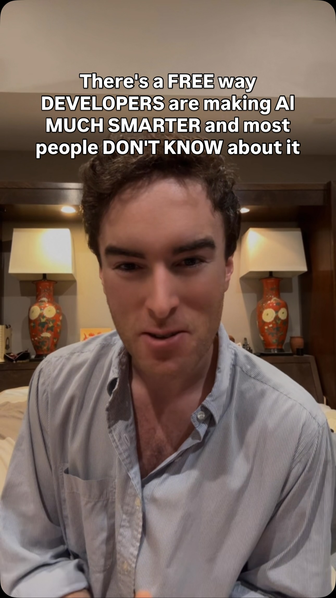

workflow_multiplier
Skills That Earn Their Lines — benchmark-gated self-editing plus subtraction
Successor to the harness and second-brain dives. Those stop at 'append a lesson after every mistake'. The catalog now holds the missing machinery — Microsoft SkillOpt rewrites skills only when a benchmark improves, bilevel autoresearch adds a coach loop over the worker, Prime Agent rewrites its own harness to 95.5% on ARC-AGI-3 — and, crucially, evidence that subtraction matters as much as addition: Boris Cherny's simple mode and the setup-purge post show stale rules make newer models dumber. Combine them into a ratchet that both adds and deletes rules, keeping only edits that beat a held-out eval.
Anthropic · Antidoom · ChatGPT · Claude · Claude Code · Grokbot · OpenAI · Prime Agent · SkillOpt · Soup
Try It — Action Sketch
Export your last 3 months of Claude history, have a small model tag 40 representative tasks with pass/fail criteria — that is your held-out eval, Run an ablation sweep: drop each CLAUDE.md rule and skill one at a time, rerun the eval, delete anything whose removal does not hurt the score, Add the SkillOpt loop on a nightly cron — skills log issues, an optimizer proposes edits, only score-improving edits merge; export passing traces for a Soup fine-tune later, Falsifier: if eval scores vary more between two identical runs than between best and worst rule sets, your eval is too noisy and the whole ratchet is optimizing noise
Prerequisites: A CLAUDE.md and skills folder with some history, Exported chat logs, A cheap model for grading (Haiku-class or local)
Connected Posts (11)

Microsoft SkillOpt — agent skills that rewrite themselves against benchmarks
Microsoft open-sourced SkillOpt: a base model runs a task, an optimizer rewrites the skill instructions from results, successful paths are separated from failures, and edits that don't beat the benchmark are auto-rejected. Claimed to beat hand-written prompts and TextGrad and to transfer across models.

Bilevel autoresearch loops — an outer coach loop rewrites the search
Builds on Karpathy's autoresearch loop (try change, test, keep or revert). An outer coach loop watches the inner worker and rewrites its search playbook so it stops repeating the same ideas; claimed ~5x better on Karpathy's benchmark with the same models.
Prime Agent — self-rewriting harness lifts Opus 5 to 95.5% on ARC-AGI-3
Prime Intellect released Prime Agent, an open-source coding harness built on a Recursive Language Model (RLM) framework that rewrites its own prompts, memory, tasks and scaffolding at runtime based on failures. Opus 5 alone scores 30% on ARC-AGI-3; with the harness, 95.5%, a hair over the 95.4% human baseline. The real story is test-time compute and self-modifying scaffolding.
Self-improving skills vs AI teammates — log issues, rewrite skills
Argues personified 'AI teammates' are static while skills are adaptable: keep every skill in a database table, have each skill log issues about itself when used into a second table, then periodically run a prompt that reads the accumulated issues and rewrites the skill. Specific workflows with clear end states beat persona prompts.

Systems that prompt your AI — DB-driven loops with skills and cron
Riffs on Boris Cherny's advice to build loops that prompt Claude instead of prompting it yourself: connect the AI to a database with work and issues tables, use cron jobs to detect pending changes, and run skills for scoping, implementing, testing and repeating until the human goal is met. Counterpoint: for go-to-market work the human is still the bottleneck and must stay in the loop.

Chat-history mining — derive better custom instructions from your AI logs
Export your full ChatGPT or Claude history, have a small model like Jev tag every conversation for mistakes and usage patterns, then feed the analysis to your main assistant to write new custom instructions. A cheaper alternative to building a full personal 'Jarvis' agent.

Claude Code simple mode — ablating system prompts makes the model smarter
Boris Cherny at YC Startup School: Claude Code accepts --system-prompt for a custom system prompt, and an undocumented simple mode (env var CLAUDE_CODE_SIMPLE=1) deletes all system and tool prompts. Anthropic uses it as an ablation and finds the model is slightly more intelligent without them, though product prompts still help it behave as users expect.
Claude setup purge — audit stale CLAUDE.md rules for newer models
Argues rules and skills written for older Claude models now hold newer ones back, citing Anthropic cutting much of its system prompt after Opus 5. Recommends a prompt that audits every CLAUDE.md rule and skill, deletes dead weight and rebuilds a lean setup; the prompt itself is comment-gated.

Liquid AI Antidoom — FTPO training to kill reasoning doom loops
Antidoom is Liquid AI's open-source pipeline that finds the exact token restarting a repetition loop, marks it rejected, picks up to 20 alternatives, and trains with Final Token Preference Optimization (FTPO) plus a KL-like regularizer in logit space so reasoning isn't damaged.

Soup — fine-tune LLMs on a 4GB laptop GPU with one command
Soup, built by a 17-year-old solo founder from Kazakhstan, wraps LLM fine-tuning into a simple flow: describe the goal, point at your data, run `soup train`, and it auto-picks batch size and memory settings. Claimed 85k users training medical assistants and reasoning models on consumer GPUs. Link gated; verify the claims.

Self-improving trading agent — critic loop that rewrites losing strategies
Workflow pitch: describe a strategy, an agent codes it and wires the broker API, runs a five-year backtest, and a critic agent dissects losing trades and rewrites entry/exit logic before rerunning. Hard-coded stop-loss and drawdown limits sit outside the agent's reach, and failed strategies go to a local DB the agent learns from. Guide is comment-gated.
Deeper Dive generated 2026-10-21T18:20:58.213612 · Curated by Claude for Gabe (@6ab3) · dejaviewed.com